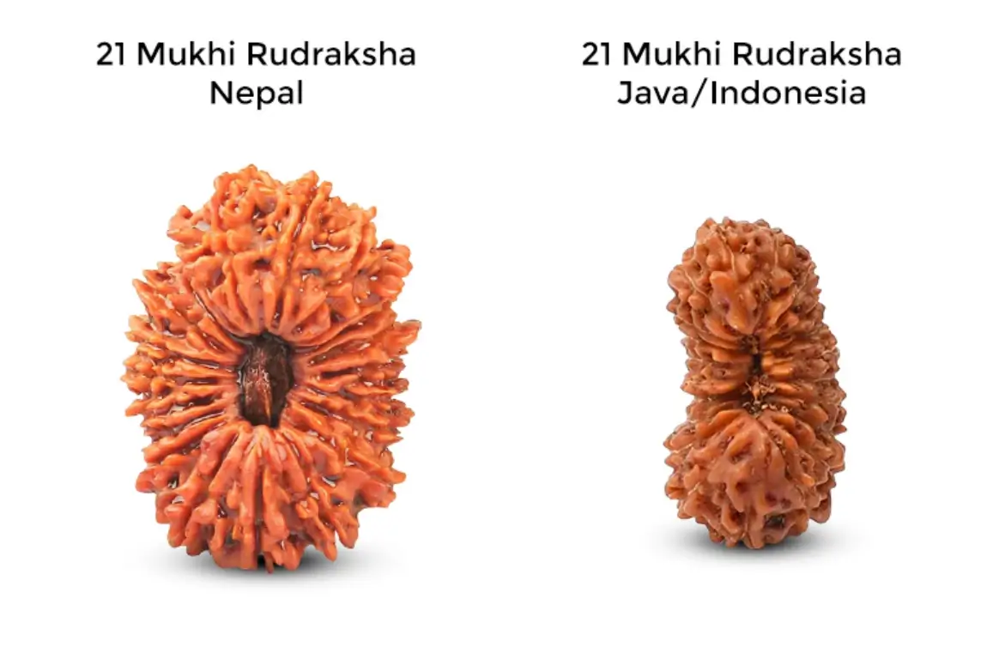
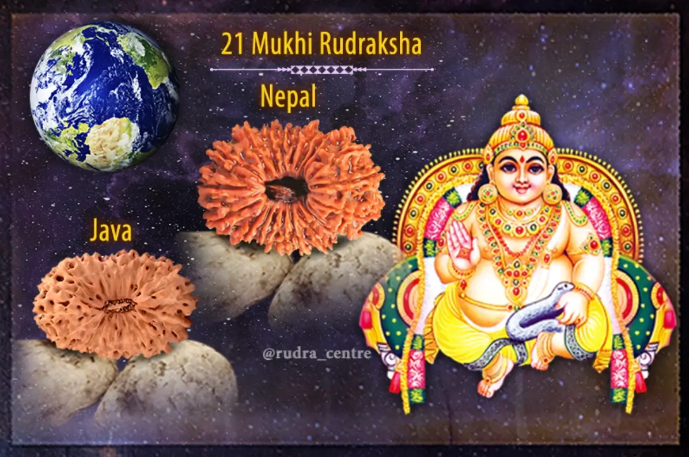

Ikis Mukhi Rudraksha - Hạt Kim Cang 21 Khía
Hạt Rudraksha 21 mukhi còn gọi là hạt Kim Cang 21 khía. Rudraksha là loại hạt linh thiêng được tôn thờ trong Ấn Độ giáo và có nhiều tác dụng tốt cho sức khỏe và tinh thần. Trong đó, hạt Rudraksha 21 mukhi được coi là loại quý hiếm chỉ chiếm 0,05% xác suất loại hạt này xuất hiện trong tự và có nhiều công dụng đặc biệt.
Hạt Kim Cang 21 Khía nổi bật với hai loại, giống Nepal và Java Indonesia. Đây là những loại hạt Rudraksha mạnh mẽ và chân thực nhất. Các hạt Nepali lớn hơn, nặng hơn, mạnh mẽ hơn và phát triển hơn với các đường mukhi được khắc sâu và hình chiếu có gai. Các hạt Java tương đối nhỏ hơn, trọng lượng nhẹ hơn với các đường mukhi có thể nhìn thấy được và bề mặt mịn hơn.

Ý nghĩa của hạt Rudraksha 21 Mukhi

Về mặt ý nghĩa, hạt Rudraksha 21 mukhi đại diện cho vị thần Kubera, người được coi là vị thần của sự giàu có sung túc trong Ấn Độ giáo. Người Ấn Độ thường sử dụng hạt này để cầu nguyện, thờ cúng và tôn thờ. Họ tin rằng việc đeo hạt Rudraksha 21 mukhi sẽ giúp họ được che chở, bảo vệ bởi đấng tối cao. Ngoài ra, hạt còn mang ý nghĩa về sự giác ngộ, hòa bình và an lạc tinh thần.
Trong tín ngưỡng Phật giáo, trong đó hạt Rudraksha 21 mukhi được ví von như viên Kim Cang Bát Nhã có 21 khía, tượng trưng cho con đường giải thoát. Việc đeo hạt Kim Cang 21 khía được coi là biểu tượng cho sự giác ngộ, trí tuệ và giải thoát khỏi vòng luân hồi quay về.
Hạt Kim Cang 21 Khía mang lại sự thịnh vượng và may mắn to lớn. Nó mang đến sự Đồng nhất trong cuộc sống của người mặc với sự hỗ trợ từ thế giới. Người đeo hạt này được ban phước với tên tuổi, danh tiếng và sự giàu có.
Lợi ích của hạt Rudraksha 21 Mukhi
Hạt Rudraksha 21 Mukhi còn được coi là có nhiều công dụng tốt cho sức khỏe. Theo y học Ấn Độ cổ truyền, hạt Rudraksha 21 Mukhi có tác dụng:
Mang lại tài lộc, may mắn và thịnh vượng
Hạt Kim Cang 21 Khía được cho là biểu tượng của thần Kubera, vị thần cai quản tài lộc trong Ấn Độ giáo. Do đó, người ta tin rằng đeo loại hạt này sẽ giúp thu hút năng lượng tích cực, mang lại may mắn và thịnh vượng cho người đeo.
Năng lượng của hạt giúp tăng cường khả năng nhận thức, tư duy sáng tạo và đưa ra quyết định sáng suốt, từ đó giúp người đeo gặt hái thành công trong công việc và kinh doanh. Hạt Kim Cang 21 Khía còn được cho là giúp thu hút các mối quan hệ tốt đẹp, tạo dựng uy tín và danh tiếng trong xã hội.
Bảo vệ khỏi tà khí, năng lượng tiêu cực
Hạt Kim Cang 21 Khía được cho là có năng lượng mạnh mẽ giúp bảo vệ người đeo khỏi tà khí, năng lượng tiêu cực và các nguy hiểm khác.
Năng lượng của hạt được cho là giúp xua đuổi tà ma, tránh được những điều xui xẻo, mang lại bình an cho người đeo.
Hạt Kim Cang 21 Khía giúp tăng cường sức mạnh tinh thần, giúp người đeo vượt qua những thử thách trong cuộc sống.
Cải thiện sức khỏe và tinh thần
Hạt Kim Cang 21 Khía cải thiện sức khỏe, tăng cường hệ miễn dịch và giảm căng thẳng. Năng lượng của hạt được cho là giúp cân bằng năng lượng trong cơ thể, giảm các triệu chứng đau nhức, và chất lượng giấc ngủ.
Hạt Kim Cang 21 Khía còn được cho là giúp giảm căng thẳng, lo âu, mang lại sự an nhiên, thanh thản cho tâm hồn.
Hỗ trợ thiền định và phát triển tâm linh
Hạt Kim Cang 21 Khía được cho là giúp người đeo tập trung tinh thần, tăng cường khả năng thiền định.
Năng lượng của hạt giúp khai mở trí tuệ, tăng cường khả năng nhận thức và phát triển tâm linh.
Hạt Kim Cang 21 Khía giúp kết nối với năng lượng vũ trụ, mang lại sự bình an và giác ngộ cho người đeo.
Cách đeo hạt Rudraksha 21 Mukhi
Về cách đeo hạt Rudraksha 21 mukhi, người ta thường đeo hạt trên trán hoặc cổ. Hạt có thể được đeo trực tiếp lên da hoặc đeo trên dây chuyền, vòng cổ. Khi đeo hạt lên trán, người ta tin rằng nó sẽ giúp tăng cường trí tuệ, trí nhớ. Còn khi đeo hạt trên cổ, nó có tác dụng an thần, giảm stress và giúp cân bằng dương cực âm cực trong cơ thể. Tuy nhiên, khi đeo hạt lần đầu, người mới nên đeo trong thời gian ngắn rồi tăng dần thời gian đeo để cơ thể quen dần.
Giá của hạt Rudraksha 21 Mukhi
Một loại 21 Rudraksha nguyên bản của Nepal do sự xuất hiện cực kỳ hiếm của nó sẽ luôn rất đắt tầm khoảng từ 50 000 - 80.000 $ , một trong những hạt mạnh nhất thể hiện sự giàu có và ham muốn mặc dù hạt Nepali có diện tích bề mặt lớn hơn nhưng hầu hết mọi người đều chọn loại 21 mukhi từ Java vì nó có giá khoảng 11.000 $ phải chăng hơn và mang lại kết quả tuyệt vời tương tự.